Seven moves: match architecture to data structure, pick the right likelihood, pretrain on what's abundant, fine-tune on what's scarce, split honestly, benchmark against the strong baseline, audit before you trust.
Learning objectives
- Map genomic prediction problems to their dominant ML architectures: pileups → CNN, long-range regulation → dilated convolution + transformer, count matrices → VAE, molecular graphs → GNN, protein 3D → equivariant transformer.
- Explain why each architecture matches its problem — translate the architecture's inductive bias into the structural property of the data it exploits.
- Describe where labelled data in genomics comes from, why it's chronically limited, and how self-supervised pretraining compensates.
- Diagnose data-leakage patterns in genomics — sequence homology, family relatedness, cross-study batch effects — and design splits (chromosome-wise, species-wise, family-wise) that avoid them.
- Walk through DNA language models (DNABERT, Nucleotide Transformer, HyenaDNA, Evo) and give an honest assessment of what pretraining-on-DNA does and does not buy.
- Assess cell foundation models (scGPT, Geneformer, scFoundation, UCE) — what they claim, what the evidence shows, and what "zero-shot" means at the single-cell scale.
- Predict which genomics-ML advances are most likely to matter in the next 3 years and why.
Part 1 · 45 min Architectural Pattern Survey
1.1 Why a synthesis lecture
You've already met the main architectures in this course:
- L4 — DeepVariant: CNN classifier on read pileups.
- L6 — DESeq2 / limma: GLM-based differential-expression testing (pre-deep-learning, included for contrast).
- L8 — scVI / totalVI: VAE for single-cell count matrices.
- L9 — Enformer / Borzoi: dilated convolution + transformer for long-range regulatory sequence.
- L13 — SuSiE / LDpred: Bayesian sparse regression for fine-mapping + PRS.
- L15 — AlphaFold2: equivariant transformer + iterative refinement for protein structure.
Individually, each lecture treats its method as "the right approach for this problem." This lecture pulls the pattern out: for each problem, the architecture's inductive bias matches the data's structural property. Architecture-problem matching is the core design skill in genomics ML.
1.2 Pileups → Convolutional Neural Network
Problem (Lecture 4): variant calling. Given a pileup of reads at a candidate position, classify the genotype (ref/ref, ref/alt, alt/alt, no-variant).
Input representation: a small 2D image. Rows = reads; columns = positions around the candidate; channels = (base, base-quality, strand, mapping-quality, variant-support, …). Typical size: ~100 rows × ~200 columns × ~6 channels.
Architecture: 2D CNN. Convolutional layers extract local patterns; pooling reduces to context-aware representations; dense layers produce the final classification.
Why CNN works: translation invariance (the column of the candidate doesn't matter; weight sharing handles "where in the window" by construction); local feature extraction (mismatches, deletions, strand-bias patterns are local features in a 2D image); compositional hierarchy (early layers detect base mismatches; later layers detect concerted patterns — many reads with the same mismatch = strong variant evidence).
DeepVariant (Poplin et al. 2018) demonstrated that a CNN on pileup images could match or exceed the hand-engineered HaplotypeCaller. The CNN's inductive bias matches pileup evidence exactly.
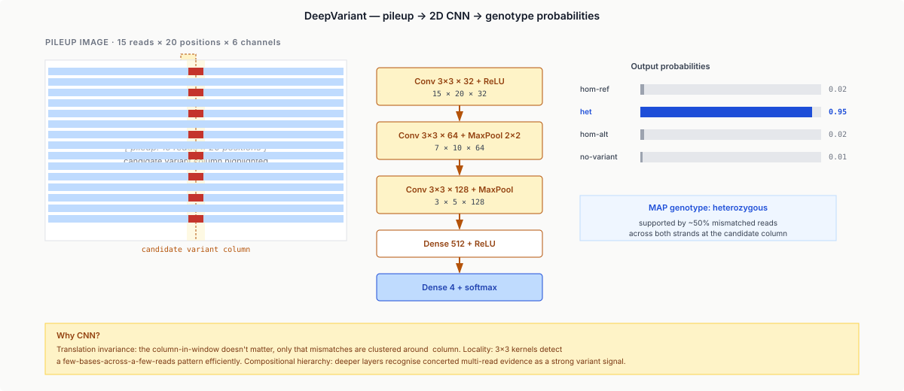
1.3 Long-range sequence regulation → Dilated Conv + Transformer
Problem (Lecture 9): predict regulatory output (TF binding, chromatin accessibility, gene expression) from 100 kb of surrounding genomic DNA.
Input representation: a one-hot encoded DNA sequence, ~100,000 × 4.
Architecture: a two-stage hybrid.
- Stage 1 (local) — stacked dilated convolutions. Each layer's receptive field grows exponentially with dilation rate. After 10 layers with dilations 1, 2, 4, …, 512, the receptive field is ~2 kb. Extracts motif-scale features.
- Stage 2 (long-range) — transformer layers with multi-head self-attention on the dilated-conv output. Attention heads route information from distal regulatory elements (enhancers ~100 kb away) to the gene body.
The combination is the Enformer / Borzoi architecture.
Why this works: hierarchy matches scale (motifs ~10 bp → enhancer blocks ~1 kb → enhancer-to-gene ~100 kb; dilated conv handles the first two scales; attention handles the third); attention is the right tool for sparse long-range interactions (only a handful of distal enhancers regulate any given gene; attention's per-query routing captures sparsity naturally); receptive-field management (full self-attention at 100 kb would be $O(L^2) = O(10^{10})$ — the dilated-conv stage down-samples first).
Alternative: HyenaDNA (Nguyen et al. 2023) replaces attention with long convolutions parameterised via implicit operators; scales to > 1M-bp contexts at linear cost.
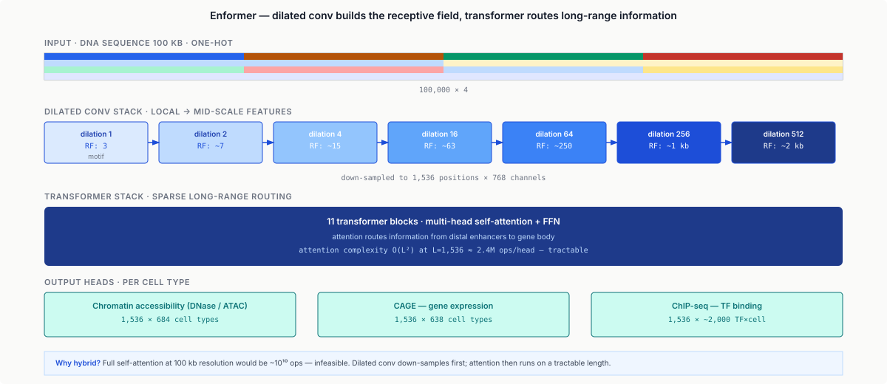
1.4 Count matrices → Variational Autoencoder
Problem (Lecture 8): model single-cell count data. Observations: cells × genes count matrix with high sparsity, batch effects, technical dropout.
Input representation: per-cell count vector over ~20k genes.
Architecture: Variational Autoencoder (VAE). Encoder maps a cell's count vector to a low-dimensional latent $\mathbf{z}$ (~10–30 dims) via a neural network. Decoder takes $\mathbf{z}$ + batch covariates and outputs parameters of a count likelihood (typically negative binomial). Loss = negative ELBO = reconstruction (NB log-likelihood) + KL regularisation toward $\mathcal{N}(0, I)$. scVI (Lopez et al. 2018) is the canonical implementation; totalVI handles RNA + protein; MultiVI handles RNA + ATAC.
Why VAE works: dimensionality reduction via a learned prior (Gaussian latent → compact representation; PCA does this linearly, the VAE's nonlinear encoder captures cell-state manifolds); right likelihood matters (gene counts are over-dispersed; using Gaussian reconstruction grossly misfits; NB matches the empirical distribution); batch correction by conditioning (decoder takes batch as input, latent learns a batch-invariant representation); probabilistic framework (ELBO gives a likelihood; uncertainty in the latent is calibrated).
1.5 Molecular graphs → Graph Neural Network
Problem: predict molecular properties (solubility, binding affinity, toxicity) from molecular structure. Cheminformatics-adjacent; in genomics, relevant for protein-ligand interaction and metabolomics.
Input representation: a graph. Nodes = atoms (with features: element, hybridisation, formal charge); edges = bonds (with features: bond type, aromaticity). Typical size: 10–100 atoms.
Architecture: Graph Neural Network (message-passing). At each layer, each node aggregates messages from its neighbours; node features update; after several layers each node's representation encodes a neighbourhood of increasing radius. A graph-level readout (sum / mean / attention pool) produces a single vector per molecule. Variants: GCN (Kipf & Welling 2017), GraphSAGE (Hamilton et al. 2017), GIN (Xu et al. 2019), MPNN (Gilmer et al. 2017).
Why GNN works: permutation invariance (atoms have no canonical order; the GNN is invariant to reordering); locality (most chemical properties depend on local neighbourhoods — functional groups, rings); explicit graph structure (atoms close in graph distance but far in any linear ordering are handled correctly).
1.6 Protein 3D → Equivariant Transformer
Problem (Lecture 15): predict 3D protein structure from sequence.
Input representation: MSA + pair representation (L × L).
Architecture: Evoformer (axial attention + triangle updates) + structure module (Invariant Point Attention, $\text{SE}(3)$-equivariant).
Why this works: axial attention on MSA (2D data — full 2D attention prohibitive; axial alternates row + column at quadratic cost); triangle updates (respect geometric consistency of pair representations — if $(i,j)$ and $(j,k)$ are close, $(i,k)$ should be constrained); $\text{SE}(3)$ equivariance in the structure module (rotate input, output rotates the same; no rotation-augmentation needed during training; far more sample-efficient).
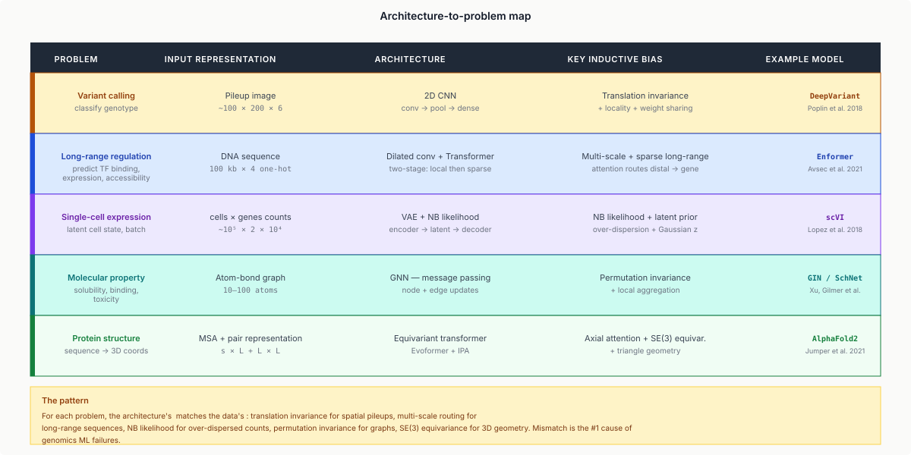
1.7 Common threads
Looking across all five:
- Each architecture commits to a structural prior. That prior must match the data.
- "Commit to a prior" is the essence of inductive bias. Stronger prior → more sample-efficient on matching data, worse on mismatched data.
- Architectures don't need to be exotic. Most genomics ML is CNN, transformer, VAE, GNN, or combinations. Innovation comes from matching the right variant to the right problem.
Part 2 · 60 min Inductive Biases — Why Each One Works
2.1 What "inductive bias" really means
An inductive bias is any assumption an algorithm makes that isn't justified by the training data alone. Every learning algorithm has them, whether explicit or hidden:
- Linear regression: response is linear in predictors.
- k-NN: nearby points have similar labels.
- Random forest: response decomposes into axis-aligned piecewise-constant regions.
- CNN: features are local + translation-invariant.
- Transformer (with positional embeddings): contextual interactions matter, but locality is weak.
- Equivariant network: invariance to a specific group ($\text{SO}(3)$, $\text{SE}(3)$, permutation).
Without an inductive bias, learning needs exponentially more data to generalise (the no-free-lunch theorem makes this precise).
The genomics ML design problem: pick an architecture whose inductive bias matches your problem's structure. Mismatch is the #1 cause of genomics ML failures.
2.2 CNN vs MLP vs Transformer on pileup-like data
Scenario: classifying pileup images.
- MLP (fully connected): treats each pixel independently. No locality, no translation invariance, no weight sharing. Must learn each feature separately for each position.
- CNN: local + translation-invariant + weight-sharing. Dramatically more sample-efficient.
- Transformer: attends globally, no locality bias. More data needed to learn that only local patterns matter.
On the DeepVariant task at comparable training budget: CNN ~99.5% F1 (the published number); transformer with absolute positional embeddings ~98.0% F1 with 10× more training data; transformer with 2D positional + local-attention bias ~99.3% F1 — restoring the CNN's inductive bias by other means closes the gap. MLP ~95% F1 — underfits systematic position/translation structure.
Lesson: inductive bias isn't "old vs new"; it's "right vs wrong for this data". When transformers beat CNNs (image classification at scale, protein structure), it's because they amass enough data to learn equivalent priors themselves. On limited-data genomics tasks, the explicit inductive bias of CNNs often still wins.
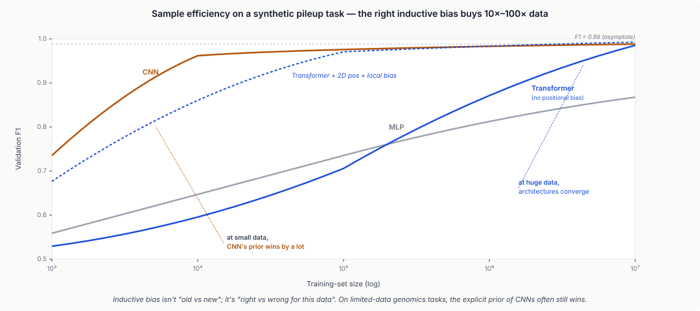
2.3 NB likelihood vs MSE for count data
Counts from single-cell RNA-seq: mean much less than variance (over-dispersed), often zero-inflated.
If you use MSE reconstruction in a VAE, you implicitly assume Gaussian $P(x|\hat{x}) \propto \exp(-(x-\hat{x})^2)$. Heavily penalises large deviations; over-dispersion drags predictions toward a mean that can't be right; predicts negative counts; NaN under log transforms; generally wrong everywhere.
If you use Poisson reconstruction, $P(x|\hat{x}) \propto \hat{x}^x e^{-\hat{x}} / x!$. Appropriate for integer counts; assumes mean = variance, but single-cell data have variance ≫ mean, so you still under-fit.
If you use Negative Binomial, the variance $\hat{x} + \hat{x}^2 / r$ captures over-dispersion; matches empirical single-cell distributions. Zero-Inflated NB handles 10×-Chromium-era technical dropout.
The right likelihood buys orders of magnitude in statistical efficiency. The noise model is the problem-matching decision, not the architecture depth.
2.4 When to break the rule — transformers eating CNNs
ViT (Dosovitskiy et al. 2020) showed that transformers beat CNNs on ImageNet-scale data. Why?
- With enough data (100M+ images), transformers learn the equivalent of local priors themselves.
- Transformers' weakness (no built-in locality) becomes a strength (can learn any prior from data).
- Their inductive bias is weaker and more general; at sufficient data scale, this is better.
The same dynamic applies in genomics:
- Protein structure (AlphaFold2): transformers + specific inductive biases (axial, triangle, equivariance) + massive data (150M+ sequences) → SOTA.
- Single-cell foundation models (scGPT, Geneformer): transformers on millions of cells. Work OK; the jury is still out on whether they beat specialised VAEs at matched data.
When does the transformer win? When you have a lot of pretraining data and the downstream tasks aren't so specialised that a specialised prior helps. For most genomics tasks today, the answer is "not yet — keep using specialised priors."
2.5 Equivariant networks — when physics gives you the prior
If your problem has a known symmetry — rotation of 3D coordinates, permutation of items in a set, translation of a signal — you can bake it into the network:
- Translation equivariance: standard CNN.
- Rotation equivariance in 2D: group-convolutional networks (Cohen & Welling 2016), steerable filters.
- $\text{SE}(3)$ equivariance in 3D: e3nn / NequIP / SE(3)-Transformer (Geiger et al. 2022), SchNet, DimeNet. AlphaFold2's IPA.
- Permutation equivariance / invariance: GNNs for graphs, Deep Sets (Zaheer et al. 2017) for unordered sets.
Baking symmetry in > learning it via data augmentation. Rule of thumb: 10×–100× data efficiency.
2.6 Summary table
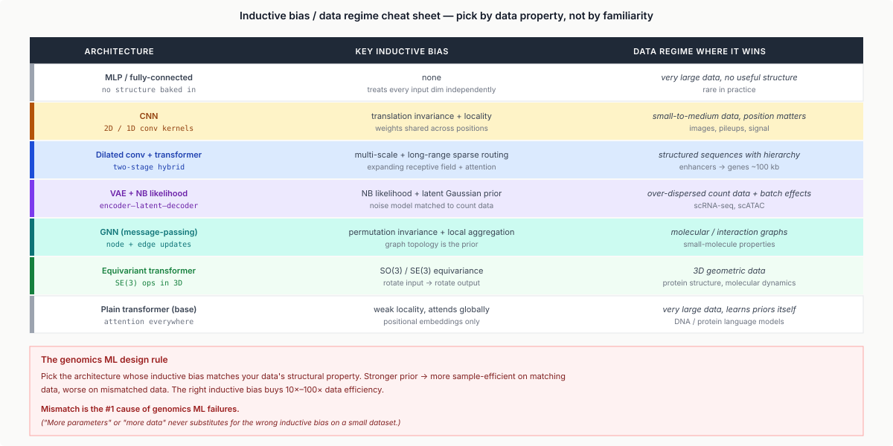
2.7 Information theory and coding-theory analogies
Inductive biases boil down to a single question: what's the minimum description length of the signal you're trying to recover? The right architecture is the one whose hypothesis class is small enough that it generalises from limited data, but rich enough to express the true signal. This is exactly the trade-off Shannon's information theory and the coding-theory community formalised half a century ago.
Sequence entropy. The Shannon entropy of a DNA sequence is $H = -\sum_i p_i \log_2 p_i$ over the four nucleotides; for a uniform-random sequence $H = 2$ bits/base. Real genomes are well below 2 bits/base because of regional biases — GC-rich vs AT-rich, CpG islands, repeats. Compressibility tracks this: gzip-compressing a human chromosome gets ~1.4 bits/base; specialised genomic compressors (Genozip, Spring) get ~0.4 bits/base by exploiting repeats and reference-based delta encoding.
Per-position information content drives the position-specific scoring matrices (PSSMs) of profile HMMs (Lecture 7 / new L7) and the sequence logos used to visualise transcription-factor motifs:
$\text{IC}_i = \log_2 |\Sigma| - H_i = 2 - \left( -\sum_b p_{i,b} \log_2 p_{i,b} \right)$
A fully-conserved column has $\text{IC} = 2$ bits; a uniform column has $\text{IC} = 0$. Total motif information $\sum_i \text{IC}_i$ predicts how easily the motif can be detected against a random-DNA background — directly the matched-filter SNR.
Mutual information. For two genomic positions, $I(X; Y) = \sum p(x, y) \log \frac{p(x, y)}{p(x) p(y)}$ measures statistical dependence. Applications:
- Coevolution detection: position-pairs in an MSA with high MI are likely interacting in 3D — the same signal AlphaFold (L15 / new L23) consumes from MSA columns.
- Regulatory inference: high MI between a TF's binding pattern and a gene's expression suggests regulation. Used in ARACNe / CLR algorithms for gene regulatory network reconstruction (Lecture 22 / new L10).
- Feature selection: MI between a SNP and phenotype is a model-free alternative to the GWAS p-value (Lecture 13 / new L19), invariant to non-linear association forms.
The genetic code as an error-correcting code. The 64-codon → 20-amino-acid mapping is degenerate: most amino acids have 2-6 synonymous codons. From an information-theory perspective, this is a (64, 20) code with a structured redundancy:
- Synonymous mutations at the third base ("wobble") rarely change protein sequence — most C↔T and A↔G transitions at codon position 3 are silent.
- Mutations at position 1 typically change to a chemically similar amino acid (preserve hydrophobicity / charge).
- Mutations at position 2 are the most disruptive — usually change chemical class.
This is exactly the property of a code that minimises the expected damage from a random bit-flip: the most-probable error mode (transition mutations at position 3) maps to a no-change, and the next-most-probable maps to small-amino-acid-distance changes. Freeland & Hurst (1998) showed that the standard genetic code is in the top 0.02% of randomly-permuted code tables for minimising mutation damage. The code is error-resistant by selection — natural error correction without explicit parity bits.
Compressed sensing in genomics. Several measurements throughout this course are compressed sensing in disguise:
- scRNA-seq: 10⁵ cells × 2 × 10⁴ genes is observed at ~5% of full-coverage information; matrix completion / low-rank recovery is everywhere.
- DIA proteomics (L11 / new L11): co-fragmented peptides recovered from sparse representations in MS2 spectra.
- Pooled CRISPR screens (L24 / new L21): each cell carries one sgRNA but the population-level phenotype is a linear measurement of the perturbation matrix.
- Hi-C contact recovery (L10 / new L15): the 3D contact tensor is sparse; downsampling a Hi-C library and L1-regularised reconstruction recovers TADs from a fraction of full coverage.
The pattern is the same: an underdetermined linear system $\mathbf{y} = A \mathbf{x}$ where $\mathbf{x}$ is sparse; recovery via convex optimisation or NMF. Modern genomics has rediscovered this independently in each domain.
Part 3 · 25 min Training Data Is the Bottleneck
3.1 Where labels come from in genomics
Architecture choices are constrained by how much labelled data you have. In genomics that's almost always much less than comparable ML domains. Roughly ranked by abundance:
- Unlabelled sequences (DNA, protein). Billions (UniRef, NCBI, SRA). Usable for self-supervised pretraining.
- GWAS associations. Hundreds of thousands of SNPs × hundreds of traits. Noisy; biobank-scale.
- Bulk RNA-seq. Millions of samples (SRA, GEO). Labels = tissue / condition; noisy annotations + batch effects.
- Single-cell expression. ~100M cells (cellxgene, HCA). Labels = cluster / cell-type — re-clustering changes them.
- Protein structures. ~180k experimental in PDB; 200M predicted in the AF DB. Predicted ones usable as labels with confidence filtering.
- Gene annotations. Tens of thousands per genome. Mostly-curated.
- Variant pathogenicity. Hundreds of thousands in ClinVar. Domain-expert-curated, slow to grow.
- Functional experimental data (DMS, MPRA). ~1k genes; hundreds of thousands of mutations per study. Gold-standard but tiny.
- Clinical outcomes. Access-controlled (dbGaP, EGA). Incomparable across studies.
This is an inverted pyramid vs generic ML: text has trillions of tokens; images have hundreds of millions; genomic functional outcomes have low thousands.
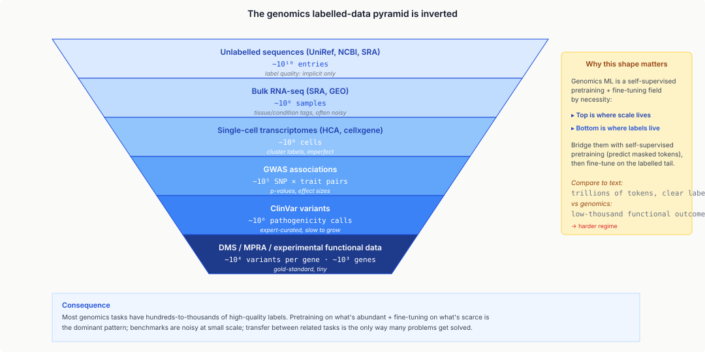
3.2 Why this shape matters
Supervised deep learning wants millions of labelled examples. Most genomics tasks have hundreds to thousands that meet the quality bar. Consequences:
- Foundation-model strategies dominate: pretrain on unlabelled, fine-tune on labelled.
- Self-supervised objectives matter more than in generic ML. Masked-language-model on DNA / protein sequences is the workhorse.
- Evaluation is perilous: with small test sets, benchmarks are noisy; differences within a few % often aren't significant.
- Transfer between tasks is the only way many tasks get solved.
3.3 Self-supervised pretraining
Self-supervised pretraining: take unlabelled data, invent a label, train. Two dominant objectives:
- Masked language modelling (MLM). Mask ~15% of tokens; predict them from context. BERT (2018) for text; DNABERT (2021) for DNA k-mers; ESM (2021) for proteins.
- Causal next-token prediction. Predict token $t+1$ given $1..t$. GPT for text; HyenaDNA, Evo for DNA; ProGen, ESM-IF for proteins.
After pretraining, the model has learned contextual representations. Downstream uses: feature extraction (freeze, classify on top); fine-tuning (continue training on labelled task); in-context / prompting (less established in genomics).
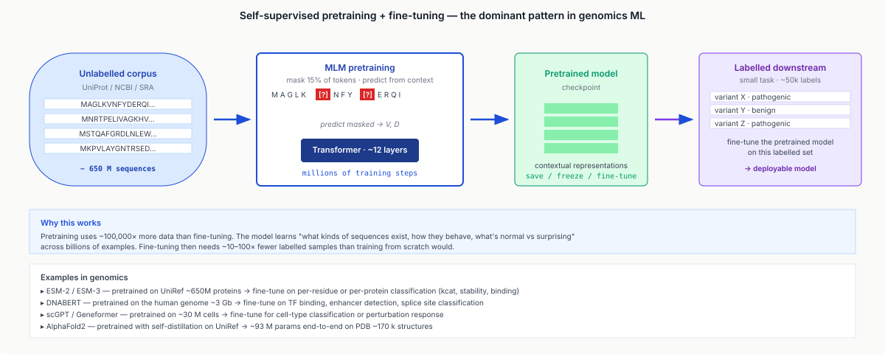
3.4 Weak supervision and noisy labels
When labels are scarce, use noisy ones:
- Distant supervision: infer labels from auxiliary data (gene expression inferred from bulk tissue; protein function from GO).
- Heuristic labels: rule-based labelling of large corpora.
- Multi-task learning: train on related tasks with more labels, transfer representations.
- Active learning: prioritise expert labels for the samples the model is most uncertain about.
All standard ML, particularly valuable in genomics because label scarcity is structural.
Part 4 · 30 min The Data Leakage Problem
4.1 Why genomics leaks worse than almost any domain
Data leakage: when train and test sets share information they shouldn't, producing falsely-optimistic performance. Standard ML advice ("shuffle and split 80/20") is catastrophic in genomics because genomic data is highly correlated. Sources:
- Sequence homology: protein sequences from related species share 60–95% identity. A random split puts close homologues on both sides — test "answers" trivial to predict.
- Genomic locality: nearby positions on a chromosome are in LD. Per-SNP random splits put correlated SNPs on both sides.
- Family relatedness: cohort individuals are often distant relatives. Sib-pairs and cousin-pairs share segments of DNA.
- Batch effects across studies: samples processed together have systematic technical signatures. Random splits across studies put correlated batch artefacts on both sides; the model learns "which lab?" rather than "which phenotype?".
Consequence: published numbers are often dramatically optimistic. Papers reporting 99% test accuracy on naïvely-split data frequently drop to 60–80% on properly-split data.
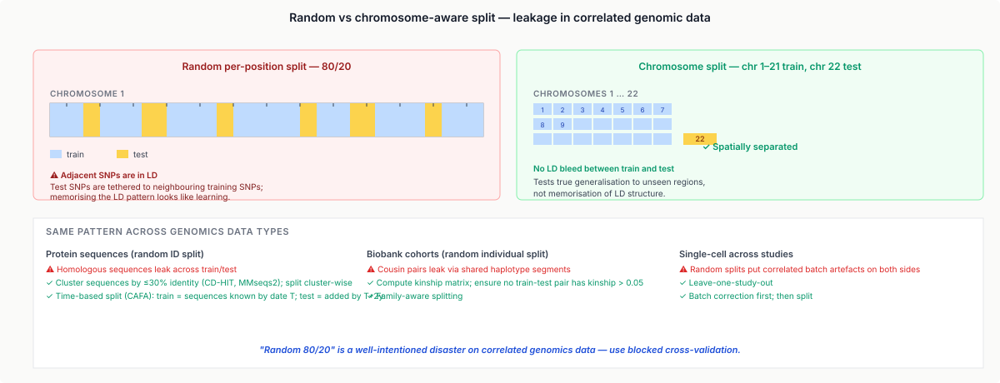
4.2 Homology-based splits for protein tasks
CAFA (Critical Assessment of Functional Annotation, 2010+) uses strict time-based splits: train = sequences known by date $T$; test = sequences added by $T + 2$ years. Avoids sequence leakage via time.
Sequence-identity clustering: cluster sequences with CD-HIT or MMseqs2 at 30–50% identity; split cluster-wise. Test cluster contains only sequences sharing < 50% identity with any training cluster. The MCMD standard for protein splits.
Common mistakes: splitting by sequence ID without clustering; splitting by UniProt accession randomly; splitting by species when species share homologues. Rule of thumb: if a random baseline scores 60% on your test set, you have leakage, not a model.
4.3 Chromosome splits for sequence regulation
For Enformer-style long-range regulation:
- Random per-position split: catastrophic — adjacent positions are in LD.
- Per-window split: still leaky if test windows are within the receptive field of training windows.
- Chromosome split: hold out entire chromosomes. Enformer uses chr8 + chr9. Community standard.
- Whole-species split: train on human, test on mouse. Stricter, rarely done at foundation scale.
4.4 Cryptic relatedness in biobank cohorts
UK Biobank has ~500k individuals. By chance, thousands of pairs are cousins-or-closer. Simple random splits leak via these pairs: a case in train + a second-cousin control in test = the model learns to distinguish them via shared haplotype patterns. Kinship-aware splitting: compute the kinship matrix; ensure no train-test pair has kinship > 0.05. GWAS evaluation pipelines always implement this; ML pipelines often don't.
4.5 Batch effects across studies
Single-cell: a cell-type classifier trained on some studies and tested on others over-performs vs leave-one-study-out. Reason: the model learns "this came from Study X". Fixes:
- Leave-one-study-out evaluation: each held-out study evaluates cross-study generalisation.
- Batch correction before split: remove known batch effects; remaining signal is biology.
- Benchmarks that enforce this (Luecken et al. 2022) explicitly use leave-one-study-out.
4.6 Real-world case studies
Three widely-cited cases of published work affected by leakage:
- Protein-function prediction benchmarks (~2015 era): naive sequence splits → 95%+ accuracy claims; CAFA-style time-based splits → ~40–60%.
- Cancer-driver prediction (2014–2018): some tools trained and tested on overlapping known-driver databases; independent benchmarks dropped them from 99% to 70%.
- Enformer's initial-release test (2021): passed chromosome splits, but a 2023 reanalysis showed within-chromosome regulatory correlation meant chromosome splits leaked too.
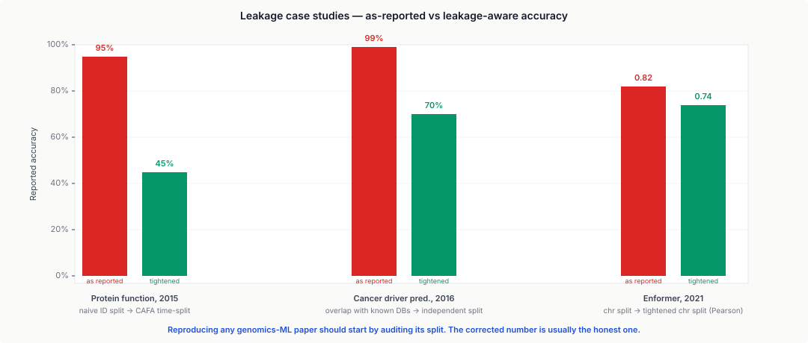
Part 5 · 25 min DNA Language Models
5.1 What DNA-LMs are
A DNA language model is a large transformer (or transformer-variant) pretrained on genomic sequence with an MLM-style objective: chop the genome into windows (500 bp – 1 Mb), tokenise (k-mer / BPE / per-nucleotide), mask some tokens, predict them from context (or causal next-token). Fine-tune or feature-extract for downstream tasks (promoter detection, TF binding, variant effect, regulatory classification).
Key entries (2021–2024):
- DNABERT (Ji et al. 2021). BERT-style; k-mer tokens; 512-token context; ~100M params.
- Nucleotide Transformer (Dalla-Torre et al. 2023, InstaDeep). 500M–2.5B params; multi-species pretraining; ~12 kb context.
- HyenaDNA (Nguyen et al. 2023, Stanford). Replaces attention with Hyena's long convolutions; scales to 1 Mb context at sub-quadratic cost.
- Evo (Nguyen et al. 2024, Arc Institute). Hyena-style; trained on millions of genomes across prokaryotes and eukaryotes; generates plausible full genomes. Context up to ~131 kb.
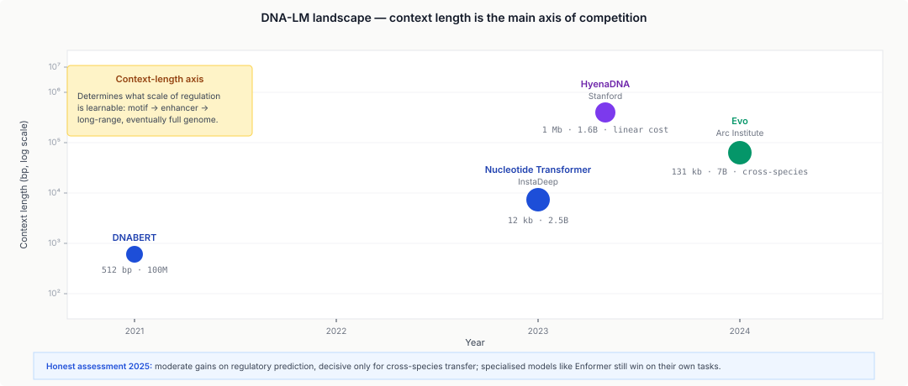
5.2 What DNA pretraining gives you
Honest account of what DNA LMs buy:
- Motif discovery at no cost. Trained models can be probed to recover known TF binding motifs (Alipanahi et al. 2015 showed it's possible; DNA LMs do it naturally).
- Moderate improvements on regulatory prediction. Downstream tasks see 1–5% absolute improvements over specialised architectures. Real, not dramatic.
- Cross-species transfer. Models pretrained across species generalise better on held-out species.
- In-silico mutagenesis: differential scoring of reference vs mutant. Faster than SHAP-style attribution on specialised models.
5.3 What DNA pretraining does NOT give you
- No uniform large wins over specialised methods. Enformer still beats DNA LMs on its own tasks. DNA LMs haven't collapsed the field.
- Generative quality is suspect. They generate plausible-looking sequences; unclear whether subtle biology survives.
- Long-range dependency isn't free. HyenaDNA / Evo have long context in name; empirically, distal-element interactions are still weakly learned.
- Species bias. Most DNA LMs are dominated by human + a few model organisms.
- Evaluation-set contamination. Benchmarks may overlap pretraining sequences. Audit carefully.
5.4 Why DNA is NOT like text
A critical EE point: DNA is not just text in a 4-letter alphabet. Differences that matter:
- Orders of magnitude more "text". Human genome ~3 Gb; prokaryotic pan-genomes effectively unbounded. Pretraining corpora are tens of TB.
- Very low information density per token vs English words. Most DNA is intergenic / non-coding / repetitive.
- Functional structure is multi-scale and sparse. Promoter motif 10 bp; enhancer 300 bp; TAD 1 Mb. Attention over 1 Mb to find 10 bp signals is a needle in a haystack.
- Frame-shift and reverse-complement symmetries. The signal on the + strand is the reverse complement of the − strand. Language models need explicit data augmentation.
- Mutation statistics differ from language editing statistics. DNA variants are SNP / indel / SV; text edits are character swaps. Pretraining objectives designed for text may not align.
5.5 Current state of the art
As of 2025:
- Very long-range prediction (> 100 kb): Enformer-class specialised models; limited DNA-LM contributions.
- Mid-range (10 kb): DNA LMs starting to match specialised methods.
- Short-range (< 1 kb) motif discovery: DNA LMs are competitive.
- Generation: Evo and successors are the frontier; experimental validation ongoing.
- Cross-species transfer: DNA LMs clearly win.
Honest assessment: DNA LMs are a useful tool but haven't transformed the field the way ESM transformed protein prediction or GPT transformed NLP.
Part 6 · 25 min Foundation Models for Cells
6.1 The pitch
scGPT (Cui et al. 2024), Geneformer (Theodoris et al. 2023), scFoundation (Hao et al. 2024), UCE / Universal Cell Embedding (Rosen et al. 2024). Transformer-based models pretrained on millions to hundreds of millions of single-cell transcriptomes. Pitch: "scGPT is to single-cell what GPT is to text." A foundation model whose pretrained representations transfer to any downstream single-cell task.
Each model takes a gene-expression vector and tokenises it differently:
- Geneformer (2023): rank-value encoding — order genes by expression, use rank as token.
- scGPT (2024): binned expression values + gene identity as parallel token channels.
- scFoundation (2024): per-gene real-valued expression via a custom embedding.
- UCE (2024): cross-species shared embedding.
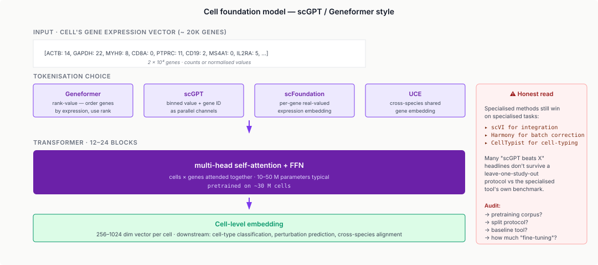
6.2 What works
- Zero-shot cell-type classification: 70–80% on held-out studies; decent, not replacing specialised classifiers.
- Perturbation response prediction: scGPT shows moderate success.
- Gene-gene interaction discovery: extract which genes are "connected" through attention.
- Cross-species transfer via shared embedding: UCE shows mouse-human cell-type alignment at improved accuracy.
6.3 What's oversold
- Evaluation is immature. Many papers report zero-shot accuracy on cell types present in pretraining (under different names). Proper leave-one-study-out gives much lower numbers.
- Specialised methods still win on specialised tasks. scVI for integration; Harmony for batch correction; CellTypist for cell-type classification. Foundation models aren't the default yet.
- Cost is high. Pretraining: thousands of GPU-hours; fine-tuning: hundreds. Downstream utility is not yet proportional.
- Biological interpretability is limited. The "learned representations" are not straightforwardly interpretable as gene-regulatory networks or pathways.
- The "GPT analogy" is loose. Text has semantic meaning per token; gene-expression vectors encode a cell's state, a different kind of object.
6.4 Where these models might matter
- Cross-species alignment at scale: UCE's direction is promising for translating findings between model organisms and humans.
- Patient-level predictions from sc-data: combining multi-patient data into a shared embedding may enable disease-state classification the way radiomics enabled imaging-based diagnosis.
- Perturbation screens at virtual scale: pretrained representations + a small amount of experimental data could predict CRISPR screen outcomes across cell types.
- Multi-modal integration: foundation models that cover scRNA + scATAC + protein are the likely future; current-gen are a stepping stone.
6.5 Reading a foundation-model paper honestly
- What was the pretraining corpus? Which cells, which studies, which technology? Held-out studies for evaluation?
- What's the evaluation protocol? Leave-one-study-out (hard) vs leave-one-cell-out (trivial)?
- What's the baseline? Best specialised tool vs trivial baseline?
- What's the downstream task? Great at cell-typing ≠ great at perturbation prediction.
- How much fine-tuning? "Zero-shot" with heavy embedding lookup is effectively fine-tuning.
Part 7 · 15 min What's Coming
7.1 Multimodal foundation models
The likely next wave: foundation models that cover more than one modality in a single latent space. Protein sequence + structure + function (ESM-3 already, and richer downstream); DNA sequence + chromatin state + RNA expression; scRNA + scATAC + protein. The engineering recipe is clear (separate encoders → shared transformer → per-modality heads); the data is the bottleneck — datasets with matched multi-modal measurements are small.
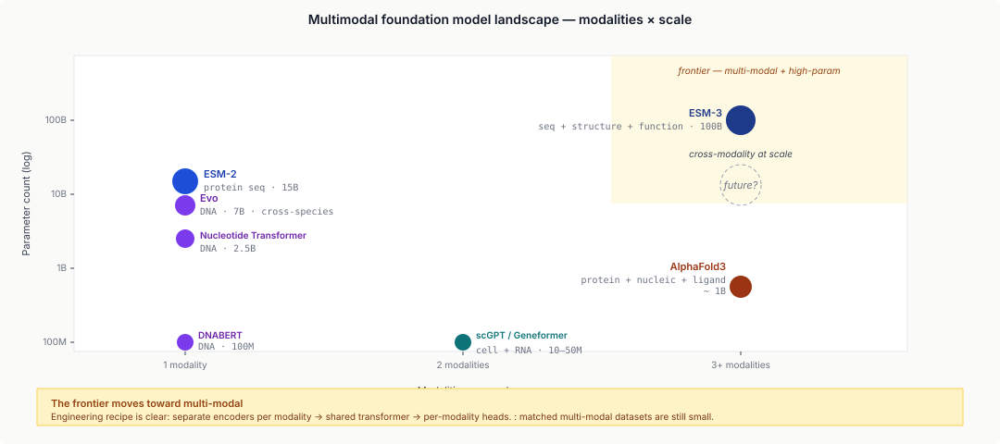
7.2 Protein-DNA co-design
Combining AlphaFold (protein) + DNA-LM (nucleic acid) to design both a protein and its target DNA / RNA jointly: a TF + its binding site; an RNA-binding protein + its bound RNA; a CRISPR variant + its guide RNA preference. RFDiffusion-All-Atom (2024) and AlphaFold3 are starting to do this.
7.3 Generative models for designed biology
Beyond prediction: generate novel biology. Designed proteins (RFDiffusion, ProteinMPNN, §L15). Designed DNA / RNA (Evo and successors). Designed cells / whole organisms — speculative, far from current tech. The dual-use question (§L15.6.4) becomes more acute with each generation.
7.4 Convergence with mainstream AI
Genomics ML used to lag mainstream ML by 2–3 years. The gap is closing: protein structure (AlphaFold) has become mainstream ML; transformer adoption in genomics has been fast; DNA LMs benefit from all of NLP's progress; scaling laws and inference optimisation are cross-applicable. Emerging scenario: genomics ML = mainstream ML + biology-specific inductive biases + biology-specific data challenges. Not a separate field.
Wrap-up · 10 min Takeaways, homework, and next lecture
What you should take away
- Architecture choice is inductive-bias matching. For each genomics problem, the structural property of the data (translation invariance, long-range sparsity, count over-dispersion, rotation symmetry) should dictate the architecture.
- Right likelihood > deep architecture. scVI's NB likelihood is what matters; the VAE scaffold is scaffolding. Signal-processing analogy: matched-filter correctness > filter complexity.
- Data is the bottleneck. Unlabelled sequences are abundant; labelled outcomes are scarce. Self-supervised pretraining + fine-tuning is the dominant pattern.
- Data leakage is catastrophic and widely under-acknowledged. Random splits leak via homology, LD, relatedness, batch. Leakage-aware splits are mandatory for honest evaluation.
- DNA language models are useful but not transformative. Moderate gains on regulatory prediction; they don't yet beat specialised architectures on the tasks those were built for.
- Foundation models for cells are in their infancy. The marketing outpaces the evidence; specialised methods remain competitive.
- Inductive bias design is THE skill. Architecture + likelihood + split design + pretraining strategy together define the result.
Next lecture
Clinical genomics, variant interpretation, and ethics. ACMG/AMP variant classification; the evidence ecosystem (population frequency, functional predictors, splice predictors, ClinVar); pharmacogenomics; incidental findings; FDA / regulatory landscape; ancestry bias and data sovereignty.
Homework
- Pick a genomics ML paper from 2022+ with a reported 95%+ accuracy. Reproduce the data split; design a tighter split (chromosome / family / time-based); re-evaluate. Report the accuracy delta.
- Take a DNA-LM (DNABERT or Nucleotide Transformer via HuggingFace) and fine-tune on a small downstream task (promoter classification from DeepProm). Compare against a CNN trained from scratch on the same data.
- Train a simple VAE (PyTorch, 50 lines) on a sc-RNA dataset with MSE, Poisson, and NB likelihoods. Compare reconstruction quality and biological coherence on UMAP.
- Read the scGPT paper and audit its benchmark. Does the evaluation use leave-one-study-out? How are "zero-shot" results framed? What baselines are compared? Write a one-page honest assessment.
- Design an architecture + inductive bias for predicting chromatin 3D contacts at 10 kb resolution from 1 Mb of surrounding sequence. Justify from first principles.
Recommended reading
- Poplin, R., Chang, P., Alexander, D., et al. (2018). A universal SNP and small-indel variant caller using deep neural networks. Nature Biotechnology 36, 983–987. (DeepVariant.)
- Avsec, Ž., Agarwal, V., Visentin, D., et al. (2021). Effective gene expression prediction from sequence by integrating long-range interactions. Nature Methods 18, 1196–1203. (Enformer.)
- Lopez, R., Regier, J., Cole, M. B., Jordan, M. I., & Yosef, N. (2018). Deep generative modeling for single-cell transcriptomics. Nature Methods 15, 1053–1058. (scVI.)
- Jumper, J. et al. (2021). Highly accurate protein structure prediction with AlphaFold. Nature 596, 583–589.
- Dosovitskiy, A. et al. (2020). An image is worth 16×16 words: Transformers for image recognition at scale. ICLR 2021.
- Ji, Y. et al. (2021). DNABERT. Bioinformatics 37, 2112–2120.
- Dalla-Torre, H. et al. (2023). The Nucleotide Transformer. bioRxiv.
- Nguyen, E. et al. (2023). HyenaDNA: long-range genomic sequence modeling at single nucleotide resolution. NeurIPS 2023.
- Nguyen, E. et al. (2024). Sequence modeling and design from molecular to genome scale with Evo. Science 386.
- Theodoris, C. V. et al. (2023). Transfer learning enables predictions in network biology. Nature 618, 616–624. (Geneformer.)
- Cui, H. et al. (2024). scGPT: toward building a foundation model for single-cell multi-omics using generative AI. Nature Methods 21, 1470–1480.
- Rosen, Y. et al. (2024). Universal Cell Embeddings: A foundation model for cell biology. bioRxiv.
- Luecken, M. D. et al. (2022). Benchmarking atlas-level data integration in single-cell genomics. Nature Methods 19, 41–50.
- Papers With Code — Genomics: paperswithcode.com/area/biology
- HuggingFace Hub (DNA models): huggingface.co/models?search=dna
Appendix — timing summary
| Block | Time | Cumulative |
|---|---|---|
| Part 1 — Architectural Pattern Survey | 45 min | 0:45 |
| Part 2 — Inductive Biases — Why Each Works | 60 min | 1:45 |
| Part 3 — Training Data Is the Bottleneck | 25 min | 2:10 |
| Part 4 — The Data Leakage Problem | 30 min | 2:40 |
| Part 5 — DNA Language Models | 25 min | 3:05 |
| Part 6 — Foundation Models for Cells | 25 min | 3:30 |
| Part 7 — What's Coming | 15 min | 3:45 |
| Wrap-up | 10 min | 3:55 |
Total: ~3h 55min of content.